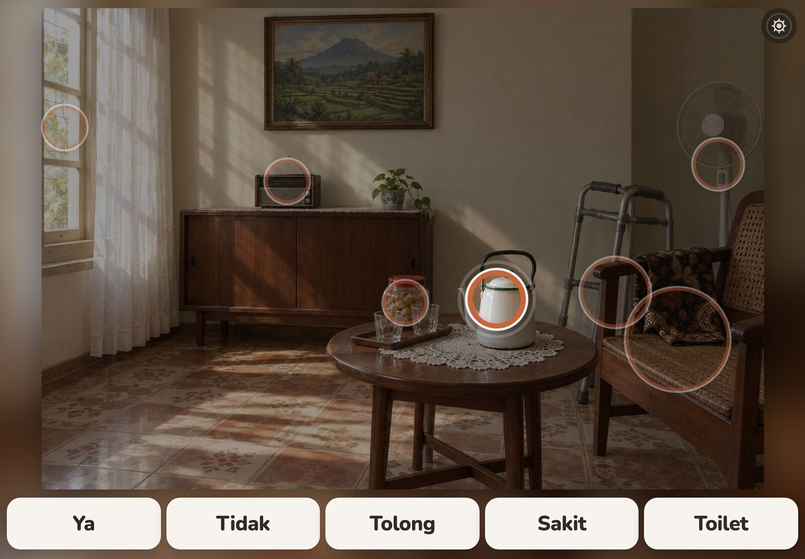
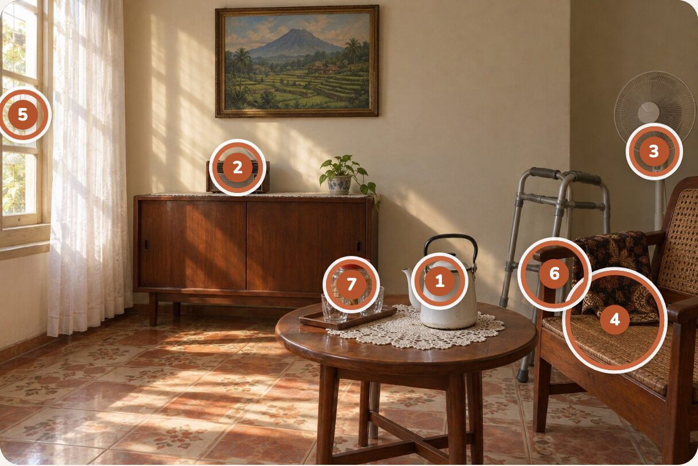
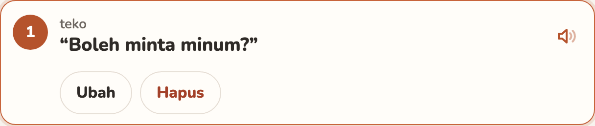

One photo becomes a voice.


Setup · caregiver
The caregiver photographs his room once. Gemini rings up to 8 things and drafts a phrase for each.
Speak · him
v0.1.0
Rings, one fix, his voice.



v0.1.0
Four slices, each one verified.
- Photo → rings
- Tap → voice
- Every spot correctable
- Saved, every failure handled
25 tests · 43 browser checks · live at roomspeak.edycu.dev
v0.1.0